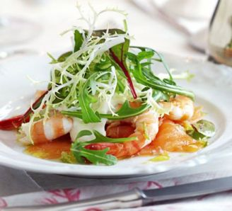
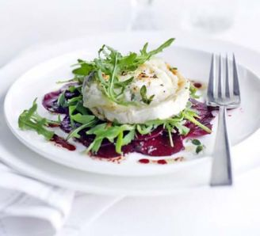

Starters
Chicken Noodle Soup
Time: 8-10 mins
Serves: 2
This is a succulent starter to go well with any meal.
This is cheap and brings home an authentic chinese style of cooking.
-
Ingredients
- 900ml Chicken or vegetable stock (or Miso soup mix)
- 1 boneless, skinless chicken breast, about 175g/6oz
- 1tsp chopped fresh root ginger
- 1 garlic clove, finely chopped
- 50g rice or wheat noodles
- 2 tbsp sweetcorn, canned or frozen
- 2-3mushrooms, thinly sliced
- 2 spring onions, shredded
- 2 tsp soy sauce, plus extra for serving
- mint or basil leaves and a little shredded chilli (optional, to serve)
-
Equipment
- Pan
- Chopping Board
- Chopping Knife
- Ladle
- Fork x2
- Bowl x2
-
Method
- Pour the stock into a pan and add the chicken, ginger and garlic.
- Bring to the boil, then reduce the heat, partly cover and simmer for 20 mins until the chicken is tender.
- Remove the chicken to the chopping board and shred into bite-size pieces using a couple of forks.
- Return the chicken to the stock with the noodles, sweetcorn, mushrooms, half the spring onions and the soy sauce.
- Simmer for 3-4 mins until the noodles are tender.
- Ladle into two bowls and scatter over the remaining spring onions, herbs and chilli shreds if using.
- Serve with extra soy sauce
Smoked Salmon with Prawns, Horseradish Cream & Lime Vinaigrette
Time: 20mins
Serves: 2
Difficulty: Easy
This is a beautiful dish that brings out the best from the sea which is then dressed in a salad and covered with a cream for a finish.

-
Ingredients
- 1 tbsp creme fraiche
- 1 tsp horseradish sauce
- 4 slices smoked salmon
- 10 large cooked prawns, peeled but tails left on
- For Salad:
- Juice 1 lime, finely grated zest of 1/2
- 1 tsp clear honey
- 1/2 tsp finely grated fresh root ginger
- 2 tbsp light olive oil
- 2 handfuls of small leaf salad
-
Equipment
- A Bowl
- 2 Plates
- A Whisk
-
Method
- Mix the creme fraiche with the horseradish and a little salt and pepper.
- For the dressing, whisk the lime juice and zest with the honey, ginger and seasoning, then whisk in the oil.
- Lay the smoked salmon and prawns on 2 plates, then top with a dollop of the horseradish cream.
- Toss the salad in most of the dressing and pile on top.
- Drizzle the remaining dressing around the plate and serve.
Marinated Beetroot with Grilled Goat's Cheese
Time: 10mins prep, 5mins cook
Serves: 2
Difficulty: Easy
Earthy beetroot works perfectly with creamy goat's cheese for an easy but impressive starter

-
Ingredients
- 6 tbsp olive oil, plus extra for greasing
- 3 tbsp red wine vinegar
- 1 tsp sugar
- 1 tsp thyme leaves
- 4 raw beetroot, peeled and very thinly sliced on a mandoline or with a food processor slicing attachment
- 2 x 100g vegetarian goat's cheese rounds with rind, halved horizontally
- 4 handfuls rocket
-
Equipment
- 1 Side Plate
- 4 Plates
- A Baking Tray
- Oven Grill
-
Method
- Mix the oil, vinegar, sugar and thyme in a shallow dish and season well. Add the sliced beetroot and marinate for at least 1 hr or overnight, if you like.
- Heat grill to high. Season the goats cheese slices, then place on an oiled baking tray and grill for 2-3 mins until golden and melting.
- Lift out the beetroot, reserving the marinade, and divide between 4 plates. Top with the rocket, a round of goats cheese and a little more rocket. Drizzle with the marinade and serve.